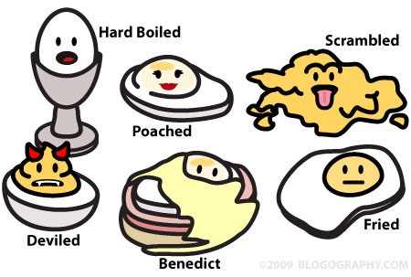

Views, Renderers, Resolvers, Oh, My!
Presenter Notes
Who am I?
Matthew Weier O'Phinney

- Project Lead, Zend Framework
- PHP Developer
Presenter Notes
Why a new View Layer?
- New MVC architecture == changes required
- Increase de-coupling
- Make serving alternate content types easier
Presenter Notes
Why a new View Layer?

- Zend_View was doing too much
Presenter Notes
- Resolved templates
- Managed helper and filter creation, registry, and invocation
- Variables container
- More!
A New Architecture
Presenter Notes
View Models

Presenter Notes
- Container for variables, template name, renderer options
- Create trees of view models, captured to variables
- Indicate a new root for the tree
Resolvers
Presenter Notes
- Resolve a template name to a resource the Renderer can consume
Renderers
Presenter Notes
- Accept a view model, and represent it
- Use the view model template, and Resolve it to a resource
- Optionally traverse trees of View Models
- Compose helpers as extension points
Helpers
Presenter Notes
- Extend the functionality of the renderer
- Render URLs, snippets of markup, etc.
View
Presenter Notes
- Use strategies to choose which renderer to use
- Use strategies to determine how to populate the response
- Strategies are simply event listeners
Default MVC Integration
Presenter Notes
Goals
- Enable layouts by default
- Provide 404 pages by default
- Provide error pages by default
- Make providing action-specific views trivial
- Provide sane defaults for view selection
- Provide basic rendering capabilities and response injection
Presenter Notes
Layouts
Zend\Mvc\Applicationinjects aViewModelinto theMvcEventZend\Mvc\View\DefaultRenderingStrategyhas a configuration setting for thelayoutTemplatenameZend\Mvc\View\InjectViewModelListenerinjectsViewModelresults from controllers into the Layout ViewModel- Layout controller plugin and view helper are available for accessing the
layout
ViewModel
Presenter Notes
404 Pages
Zend\Mvc\View\RouteNotFoundStrategyhandles 404s- Invoked when routing fails
- Invoked when the matched controller does not exist
- Invoked when a controller sets a 404 response status
- Has a configuration setting for the
notFoundTemplate, as well as whether or not to display the reason and/or exception messages.
Presenter Notes
Application Error Pages
Zend\Mvc\View\ExceptionStrategyhandles error pages- Invoked when an exception is thrown by a controller
- Has a configuration setting for the
exceptionTemplate, as well as whether or not to display exception messages
Presenter Notes
Action Views
- Controllers can return an associative array or null value
Zend\Mvc\View\CreateViewModelStrategy
- Controllers can return a
ViewModelpopulated with variables onlyZend\Mvc\View\InjectTemplateListener
- Controllers can return a fully populated
ViewModel - Controllers can return a fully populated
Response, which will bypass view rendering
Presenter Notes
CreateViewModelStrategycreatesViewModelsfrom empty arrays, null values, or assoc arraysInjectTemplateListenerinjects a template based on the active controller and optionally an action route parameter. It will be invoked in addition to above.
Rendering and Response Injection
ZendMvcViewDefaultRenderingStrategyregistersZendMvcStrategyPhpRendererStrategy, which:- Returns a
PhpRendererduring the render phase - Injects the
Responsewith the results of rendering
- Returns a
- Acts as the "render" event listener for the Application
Presenter Notes
Summary
- A lot of event listeners are setup to enable the most common use cases surrounding views.
- You can override almost any portion of it via either DI or extending
Zend\Mvc\Bootstrapin order to override thesetupView()method.
Presenter Notes
Common Tasks
Presenter Notes
- Now we get to the code
Configure Resolvers
- By default, an
AggregateResolveris registered, with two child resolvers,TemplateMapResolvermaps template names to specific filesTemplatePathStackprovides a stack of paths to consult, and a default file extension to use
Presenter Notes
Resolver Configuration
1 <?php
2 return array('di' => array('instance' => array(
3 'Zend\View\Resolver\AggregateResolver' => array(
4 'injections' => array(
5 'Zend\View\Resolver\TemplateMapResolver',
6 'Zend\View\Resolver\TemplatePathStack',
7 ),
8 ),
9 'Zend\View\Resolver\TemplateMapResolver' => array(
10 'parameters' => array(
11 'map' => array(
12 'layout/layout' => __DIR__ . '/../view/layout/layout.phtml',
13 ),
14 ),
15 ),
16 'Zend\View\Resolver\TemplatePathStack' => array(
17 'parameters' => array(
18 'paths' => array(
19 'application' => __DIR__ . '/../view',
20 ),
21 ),
22 ),
23 )));
Presenter Notes
- Use the
TemplateMapResolverfor often-used view scripts, or ones you've got set in stone - Use the
TemplatePathStackfor RAD purposes
Controllers: Provide data to the view
Explicitly:
1 <?php
2 use Zend\Mvc\Controller\ActionController;
3 use Zend\View\Model\ViewModel;
4
5 class HelloController extends ActionController
6 {
7 public function worldAction()
8 {
9 $model = new ViewModel(array(
10 'message' => 'Hello, world!',
11 ));
12 $model->setTemplate('hello/world');
13 return $model;
14 }
15 }
Presenter Notes
Controllers: Provide data to the view
Semi-Explicitly:
1 <?php
2 use Zend\Mvc\Controller\ActionController;
3 use Zend\View\Model\ViewModel;
4
5 class HelloController extends ActionController
6 {
7 public function worldAction()
8 {
9 return new ViewModel(array(
10 'message' => 'Hello, world!',
11 ));
12 }
13 }
Presenter Notes
- InjectTemplateListener will inject the template "hello/world" automatically based on the controller name and action.
Controllers: Provide data to the view
Implicitly:
1 <?php
2 use Zend\Mvc\Controller\ActionController;
3
4 class HelloController extends ActionController
5 {
6 public function worldAction()
7 {
8 return array(
9 'message' => 'Hello, world!',
10 );
11 }
12 }
Presenter Notes
- CreateViewModelStrategy will create a view model with the returned array as the variables
- InjectTemplateListener will inject the template "hello/world" automatically based on the controller name and action.
Choose an alternate layout
Via configuration:
1 <?php
2 // in a config somewhere
3 return array('di' => array('instance' => array(
4 'Zend\Mvc\View\DefaultRenderingStrategy' => array(
5 'parameters' => array(
6 'layoutTemplate' => 'some/other/layout',
7 ),
8 ),
9 )));
Presenter Notes
- This could be in your module, or your overrides under config/autoload/
Choose an alternate layout
From a controller:
1 <?php
2 use Zend\Mvc\Controller\ActionController;
3
4 class HelloController extends ActionController
5 {
6 public function worldAction()
7 {
8 // ...
9
10 $this->layout()->setTemplate('some/other/template');
11
12 // ...
13 }
14 }
Presenter Notes
Choose an alternate layout
From a view script:
1 <?php
2 $this->layout()->setTemplate('some/other/template');
Presenter Notes
Choose an alternate layout
For an entire module:
1 <?php
2 namespace Custom;
3
4 class Module {
5 public function onRouteFinish($e) {
6 $match = $e->getRouteMatch();
7 $controller = $match->getParam('controller');
8 $segments = explode('\\', $controller);
9 $namespace = array_shift($segments);
10 if ($namespace != __NAMESPACE__) {
11 return;
12 }
13 $e->getViewModel()->setTemplate('some/other/template');
14 }
15 }
Presenter Notes
- Basically, if we have a controller from our namespace, use an alternate layout template
Use multiple view models
Add a sidebar:
1 <?php
2 use Zend\Mvc\Controller\ActionController;
3 use Zend\View\Model\ViewModel;
4
5 class HelloController extends ActionController
6 {
7 public function worldAction()
8 {
9 $sidebar = new ViewModel($this->getMenuData());
10 $this->layout()->addChild($sidebar, 'sidebar');
11
12 return new ViewModel(array(
13 'message' => 'Hello, world!',
14 ));
15 }
16 }
Presenter Notes
- When rendering, both the "content" view model and the "sidebar" view model will be rendered and captured into the layout view model, prior to rendering the layout view model.
Use multiple view models
Add several models:
1 <?php
2 use Zend\Mvc\Controller\ActionController;
3 use Zend\View\Model\ViewModel;
4
5 class HelloController extends ActionController
6 {
7 public function worldAction()
8 {
9 $nav = new ViewModel($this->getNavData());
10 $this->layout()->addChild($nav, 'nav');
11
12 $sidebar = new ViewModel($this->getMenuData());
13 $this->layout()->addChild($sidebar, 'sidebar');
14
15 $footer = new ViewModel($this->getFooterData());
16 $this->layout()->addChild($footer, 'footer');
17
18 return new ViewModel(array(
19 'message' => 'Hello, world!',
20 ));
21 }
22 }
Presenter Notes
Render without a layout
Mark the ViewModel as "terminal":
1 <?php
2 use Zend\Mvc\Controller\ActionController;
3 use Zend\View\Model\ViewModel;
4
5 class HelloController extends ActionController
6 {
7 public function worldAction()
8 {
9 $model = new ViewModel(array(
10 'message' => 'Hello, world!',
11 ));
12 $model->setTerminal(true);
13 return $model;
14 }
15 }
Presenter Notes
- "terminal" model is now considered the new "root" from which to begin rendering; the layout will be skipped.
Don't render a view
Simply return a Response at any time:
1 <?php
2 use Zend\Mvc\Controller\ActionController;
3
4 class HelloController extends ActionController
5 {
6 public function worldAction()
7 {
8 // Optionally, give a status code, or populate it
9 return $this->getResponse();
10 }
11 }
Presenter Notes
Handling Alternate Content Types
Presenter Notes
An egg is not always an egg

Presenter Notes
- Some like scrambled, some like poached, etc.
- Same with requests -- sometimes we want HTML, sometimes JSON, sometimes feeds
Serving JSON
Enter the JsonStrategy
- If a
JsonModelis returned, use theJsonRenderer - If the Accept header prefers
application/json, use theJsonRenderer - Disables the layout, and renders a nested JSON object based on the model and its children
Presenter Notes
Serving JSON
1 <?php
2 use Zend\View\Strategy\JsonStrategy;
3
4 // In a Module class...
5 public function onRouteFinish($e) {
6 // ... match namespace ...
7 $app = $e->getTarget();
8 $locator = $app->getLocator();
9 $view = $locator->get('Zend\View\View');
10 $json = $locator->get('Zend\View\Strategy\JsonStrategy');
11 $view->attach($json, 100);
12 }
Presenter Notes
- High priority means it will match before the PhpRenderer, but fall through to the PhpRenderer if unable to match
Serving Feeds
Enter the FeedStrategy
- If a
FeedModelis returned, use theFeedRenderer - If the Accept header prefers
application/atom+xmlorapplication/rss+xml, use theFeedRenderer - Disables the layout, and renders a Feed, based on the contents of the
ViewModelorFeedModelprovided
Presenter Notes
- The FeedModel can either compose a
Zend\Feed\Writer\Feedobject, or build one usingZend\Feed\Writer\FeedFactorybased on the variables assigned. - Enabling it is exactly the same as for the
JsonStrategy
Combined Strategies
- You should be paying attention to Accept priority
- Having a single rendering strategy is faster and easier to test
Presenter Notes
Combined Strategies Example
1 <?php
2 class CustomStrategy implements ListenerAggregate {
3 public function onRender($e) {
4 $request = $e->getRequest();
5 $headers = $request->headers();
6 if (!$headers->has('accept')) {
7 return $this->phpRenderer;
8 }
9 $accept = $headers->get('accept');
10 foreach ($accept->getPrioritized() as $mediaType) {
11 if (0 === strpos($mediaType, 'application/json')) {
12 return $this->jsonRenderer;
13 }
14 if (0 === strpos($mediaType, 'application/rss+xml')) {
15 $this->feedRenderer->setFeedType('rss');
16 return $this->feedRenderer;
17 }
18 if (0 === strpos($mediaType, 'application/atom+xml')) {
19 $this->feedRenderer->setFeedType('atom');
20 return $this->feedRenderer;
21 }
22 }
23 return $this->phpRenderer;
24 }
25 }
Presenter Notes
- This just shows the renderer selection
- strpos is used to allow vendor extensions to content types
- Full example, including response selection, is in the manual
Things the View Layer Does Not Do (Yet)
Presenter Notes
Helper injection
This sort of thing is still necessary:
1 <?php
2 public function onBootsrap($e)
3 {
4 $app = $e->getParam('application');
5 $basePath = $app->getRequest()->getBasePath();
6 $locator = $app->getLocator();
7 $renderer = $locator->get('Zend\View\Renderer\PhpRenderer');
8 $router = $locator->get('Zend\Mvc\Router\RouteStack');
9 $renderer->plugin('basePath')->setBasePath($basePath);
10 $renderer->plugin('doctype')->setDoctype('HTML5');
11 $renderer->plugin('url')->setRouter($router);
12 }
Presenter Notes
Layout variable hinting
Seed the layout with some configuration:
1 <?php
2 public function onBootsrap($e)
3 {
4 $app = $e->getParam('application');
5 // ...
6 $config = $e->getParam('config');
7 $viewModel = $application->getMvcEvent()->getViewModel();
8 $viewModel->config = $config->layout;
9 }
Presenter Notes
- Allows creating a top-level assoc array under the "layout" key with layout-specific variables, or variables you want to use everywhere
- Thanks to Rob Allen for the idea!
Wrapping Up
Presenter Notes
What we covered
- Assemble ingredients (view models)
- Provide recipes (resolvers)
- Prepare the recipe from the ingredients (renderers)
- Have some prep cooks around to assist (helpers)
- Have a top-notch waiter to take orders and provide a nice presentation (view)
Presenter Notes
Resources
- This presentation:
- http://mwop.net/slides/2012-04-25-ViewWebinar/Zf2Views.html
- Zend\View quick start:
- http://bit.ly/I4cfjs
Presenter Notes
Thank You!
- Feedback?
- http://framework.zend.com/zf2
- http://twitter.com/weierophinney